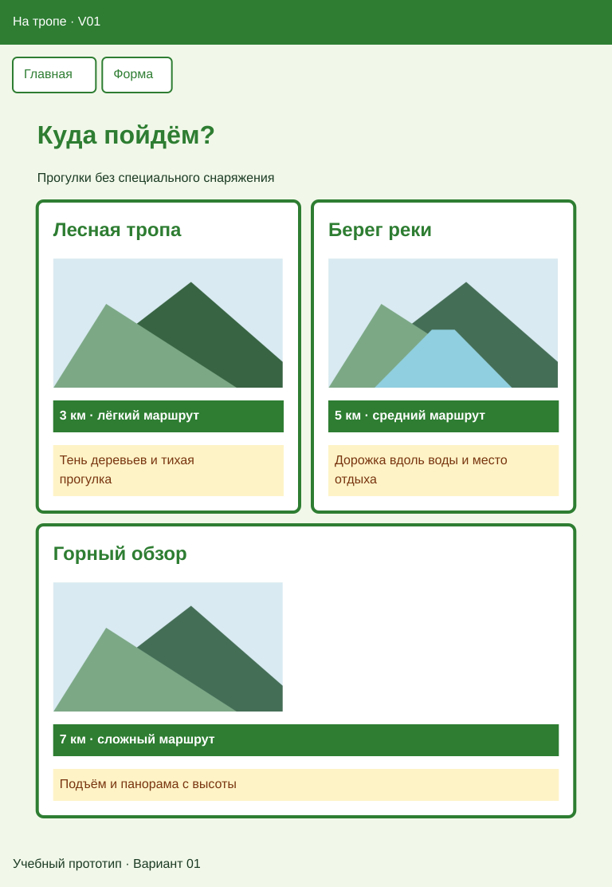
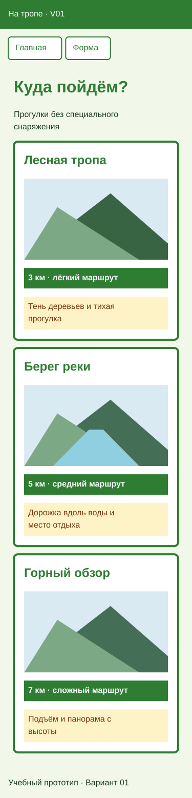
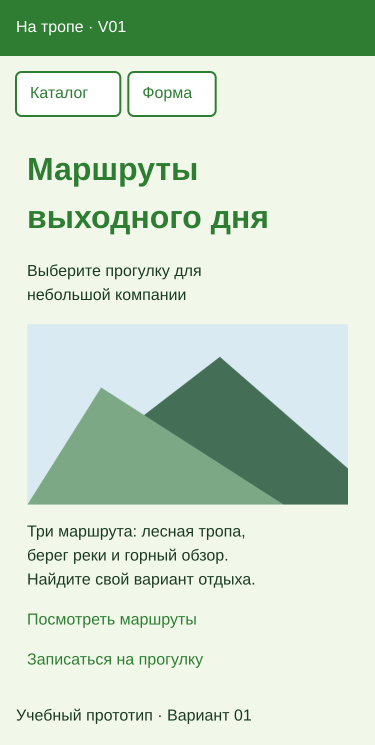
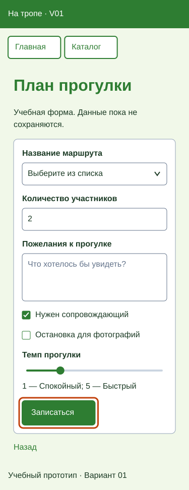
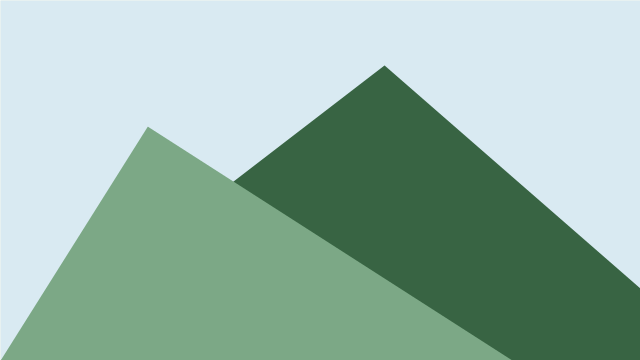
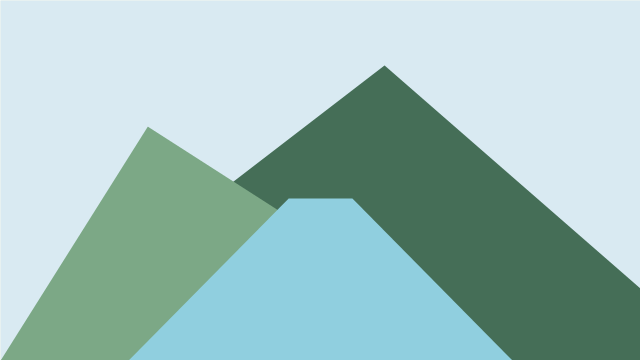

Вариант 01 — На тропе, пара 18
Адаптация и проверка в браузере. Продолжайте папку Variant01-web. Сохраните свой номер, тексты, изображения, порядок и начальные значения. Фамилия в приложении не требуется.
Статья объясняет способ выполнения; Вариант 00 показывает работу преподавателя. Здесь — самостоятельное задание вашего номера.
Задание
Адаптируйте прежние три страницы к узкому экрану по статье. Добавьте viewport, перенос меню и гибкий каталог через Flexbox; на узком экране карточки идут по одной. Проверьте главную, каталог и форму на 320, 375 и 768 CSS px. Содержание, палитра, порядок позиций и шести элементов формы сохраняются.
Результат
Каталог — 768 CSS px

Каталог — 375 CSS px

Главная — 375 CSS px

Форма — 375 CSS px

Схемы показывают настоящие данные вашего варианта; это не снимки браузера и не изображения для вставки вместо HTML. Точное совпадение пикселей не требуется. Оранжевый контур формы обозначает фокус после Tab, постоянно показывать его не нужно.
В каждом меню — две ссылки на другие страницы: «Главная», «Каталог», «Форма» без ссылки на открытую страницу. У каждой страницы один h1 внутри main и понятный title с названием приложения и номером.
Цвета и стили
| Что оформить | Селектор | Значения |
|---|---|---|
| Фон и основной текст | body |
Фон #F1F8E9; текст #1B3A24 |
| Заголовки и ссылки | h1, h2, a |
Акцент #2E7D32; подчёркивание обычных ссылок сохранить |
| Общая основная часть | main.page |
width: 92%; max-width: 56rem; margin: 0 auto; padding: 1rem |
| Шапка | header |
Фон #2E7D32; текст #FFFFFF; название приложения — обычный абзац |
| Меню | nav a |
Белый фон; текст и рамка #2E7D32; при :hover — акцентный фон и белый текст |
| Карточки | .card |
Белый фон; border: 4px solid #2E7D32; border-radius: 0.5rem |
| Характеристики | .card .specs |
Фон #2E7D32; белый текст; padding: 0.5rem; font-weight: bold |
| Описания | .card .description |
Фон #FEF3C7; текст #78350F; padding: 0.5rem |
| Форма и кнопка | .request-form, .request-form button |
Форма белая; кнопка — фон и рамка #2E7D32, белый текст |
| Фокус | a:focus-visible, input:focus-visible, select:focus-visible, textarea:focus-visible, button:focus-visible |
outline: 3px solid #C2410C; outline-offset: 3px |
Содержание главной страницы
| Элемент | Ваш текст или изображение |
|---|---|
| Название приложения | На тропе · V01 |
| Заголовок | Маршруты выходного дня |
| Короткое пояснение | Выберите прогулку для небольшой компании |
| Описание | Три маршрута: лесная тропа, берег реки и горный обзор. Найдите свой вариант отдыха. |
| Основное изображение | mountains.png |
| Переход к каталогу | Посмотреть маршруты |
| Переход к форме | Записаться на прогулку |
| Подпись | Учебный прототип · Вариант 01 |
«Посмотреть маршруты» ведёт на catalog.html, «Записаться на прогулку» — на form.html.
Содержание каталога
Название — «Куда пойдём?». Пояснение — «Прогулки без специального снаряжения».
| № | Название | Характеристика | Описание | Изображение |
|---|---|---|---|---|
| 1 | Лесная тропа | 3 км · лёгкий маршрут | Тень деревьев и тихая прогулка | forest.png  |
| 2 | Берег реки | 5 км · средний маршрут | Дорожка вдоль воды и место отдыха | river.png  |
| 3 | Горный обзор | 7 км · сложный маршрут | Подъём и панорама с высоты | mountains.png  |


Сохраните PNG по ссылкам в Variant01-web/images под прежними именами из таблицы. Имя скачанного файла может быть длинным хешем: переименуйте его в указанное имя; для главной нужен mountains.png. Используйте все три позиции строго в указанном порядке; изображения сохраняют пропорции. У каждой позиции — отдельный article.card, h2, изображение с содержательным alt, характеристика p.specs и описание p.description.
Содержание формы
Название — «План прогулки». Шесть элементов идут сверху вниз строго в порядке строк.
| Порядок | Видимая подпись | Элемент | Данные и начальное состояние |
|---|---|---|---|
| 1 | Название маршрута | select |
Первая строка — пустой выбор; затем Лесная тропа; Берег реки; Горный обзор. Выбор обязателен |
| 2 | Количество участников | Числовое поле | Целое количество от 1; шаг 1; начальное значение 2; поле обязательно |
| 3 | Пожелания к прогулке | textarea |
Подсказка: «Что хотелось бы увидеть?»; заполнение необязательно |
| 4 | Нужен сопровождающий | Независимый флажок | Выбран в начале |
| 5 | Остановка для фотографий | Независимый флажок | Не выбран в начале |
| 6 | Темп прогулки | Ползунок | От 1 до 5; начальное значение 2. Края: «Спокойный» и «Быстрый» |
После элементов — кнопка «Записаться»; за формой — ссылка «Назад» на index.html. Сохраните видимые подписи, связи for и уникального id, атрибуты name и проверку ввода. Список начинается с пустого выбора, количество — обязательное целое от 1 с шагом 1. Комментарий необязателен; подсказка не заменяет подпись. Флажки переключаются независимо. GET показывает параметры в адресе без сервера, хранения и обработки; данные учебные, вымышленные.
Перед сдачей откройте инструкцию проверки размеров и сдачи работы. В ней показано, где включить панель устройств, куда вводить 320, 375 и 768 и что показать преподавателю.
Что проверить и показать
| Действие | Результат |
|---|---|
| Пройти главная → каталог → форма | Переходы работают; все свои тексты и изображения сохранены |
| Проверить 320, 375 и 768 CSS px | Нет общей горизонтальной прокрутки и обрезанного текста; изображения и поля помещаются |
| Сравнить каталог на 375 и 768 px при стандартном шрифте | На 375 — по одной карточке; на 768 — две рядом и третья ниже на всю строку |
| Сравнить каталог с таблицей и схемами | Три свои позиции в прежнем порядке, читаемые характеристики и описания |
| Пройти форму клавишей Tab и нажать подписи флажков | Фокус виден, поля доступны, флажки независимы |
| Отправить форму с пустым выбором, затем с правильными данными | Сначала отказ; затем GET в адресе. Пустое количество, 0 и дробь не проходят |
| Открыть форму заново через меню без параметров | Количество 2; «Нужен сопровождающий» выбран, «Остановка для фотографий» не выбран; шкала 2 |
Сохраните всю папку Variant01-web. Итог покажите преподавателю; отдельный отчёт по шагам не требуется.
Выбрать вариант или вернуться к занятиям курса.